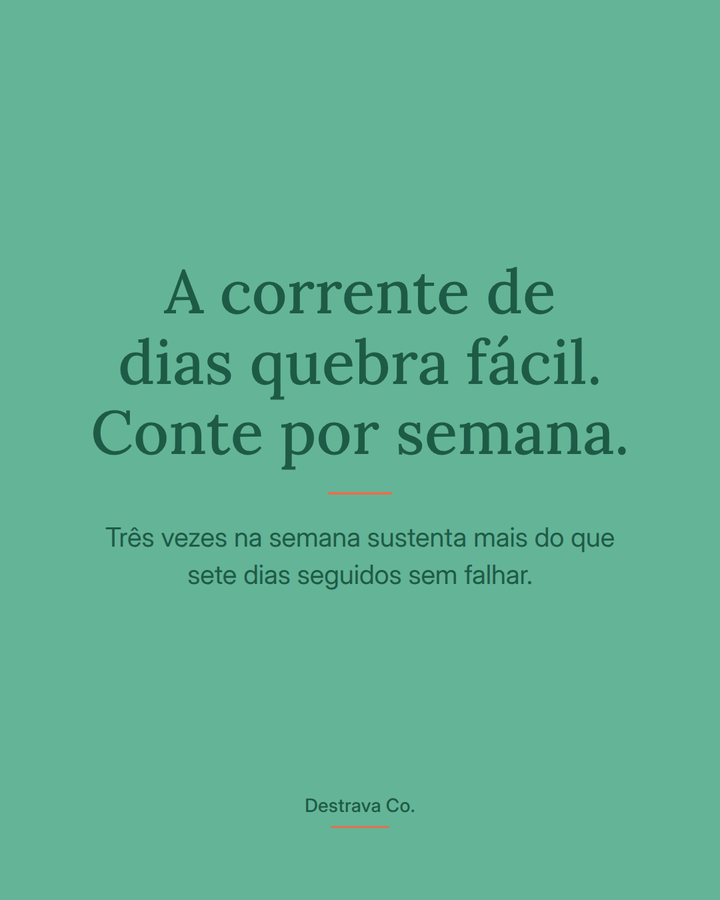
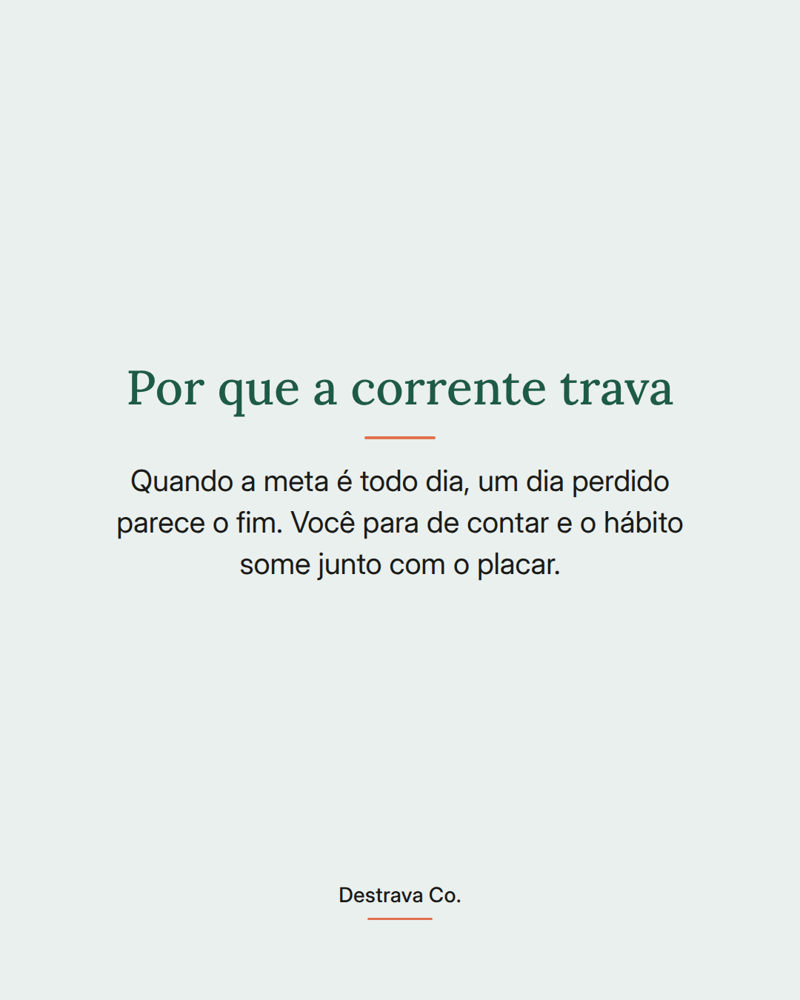
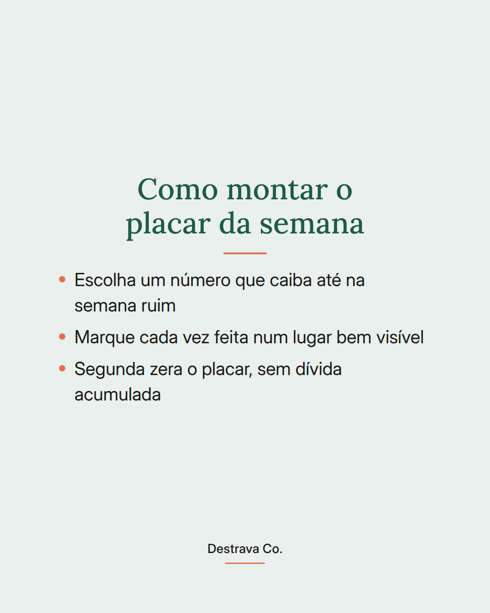
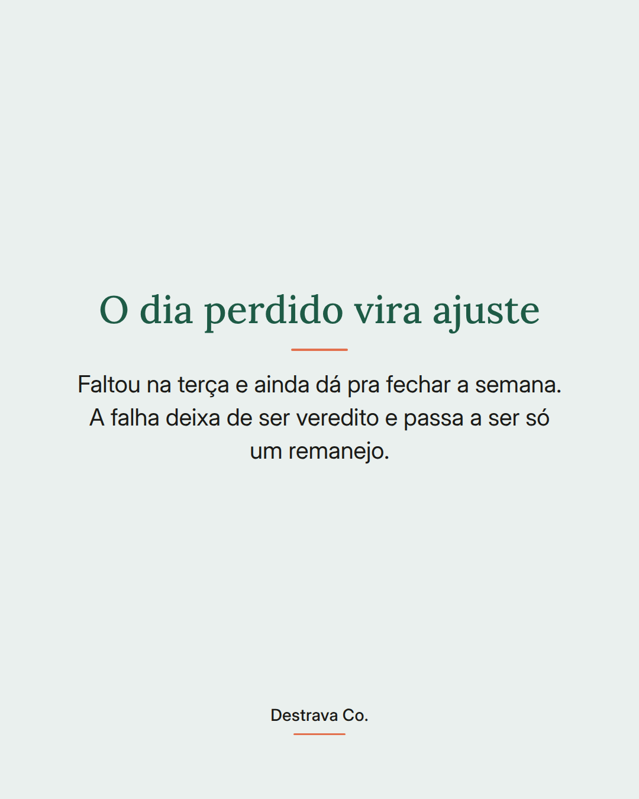
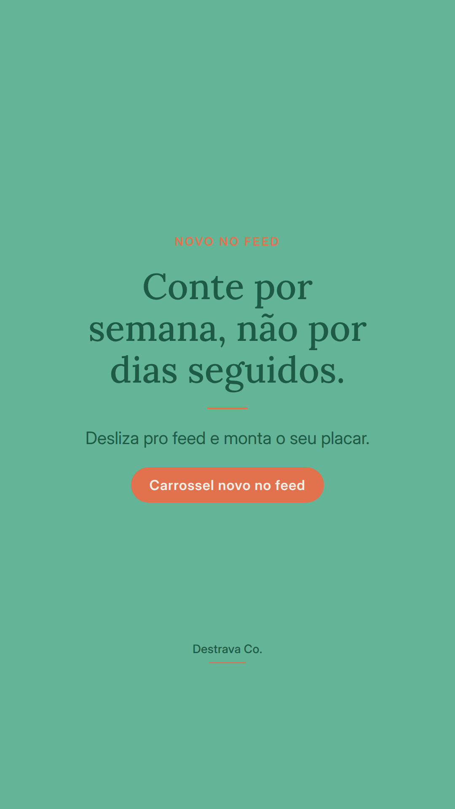
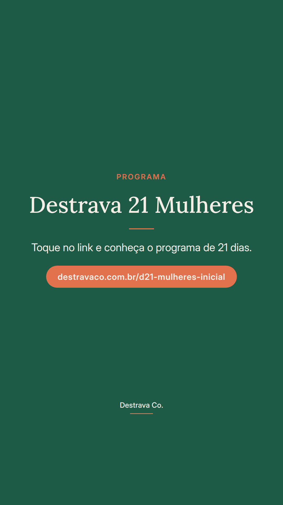

Contar dias seguidos é o jeito mais rápido de desistir de um hábito bom.
A conta por semana protege a constância: você define quantas vezes quer fazer de segunda a domingo e vai marcando. Um dia atravessado não apaga nada, só muda o dia em que você encaixa.
Escolhe um número que caiba até na sua pior semana, não na semana ideal. Deixa o registro num lugar que você olha sem procurar. E, na segunda, o placar começa limpo.
O ganho não é fazer mais. É continuar existindo no hábito depois de um tropeço.
Salva pra montar o seu placar hoje e manda pra alguém que vive recomeçando do zero. Se quiser um caminho pronto pra escolher e sustentar o hábito, o Destrava 21 te guia pelo método D.R.A.